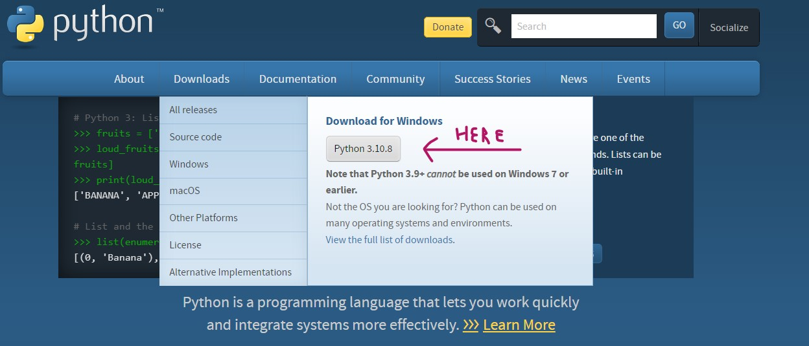
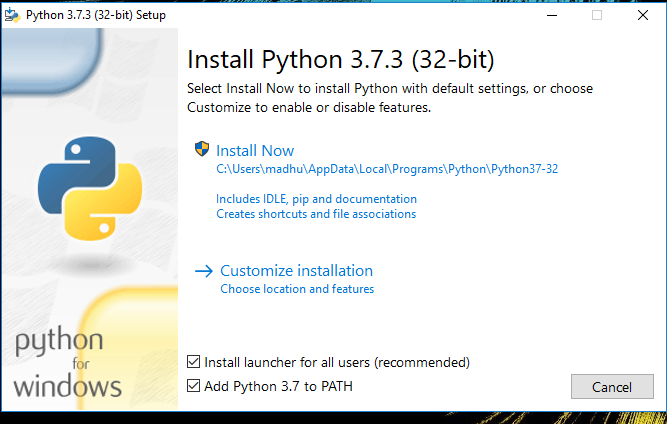
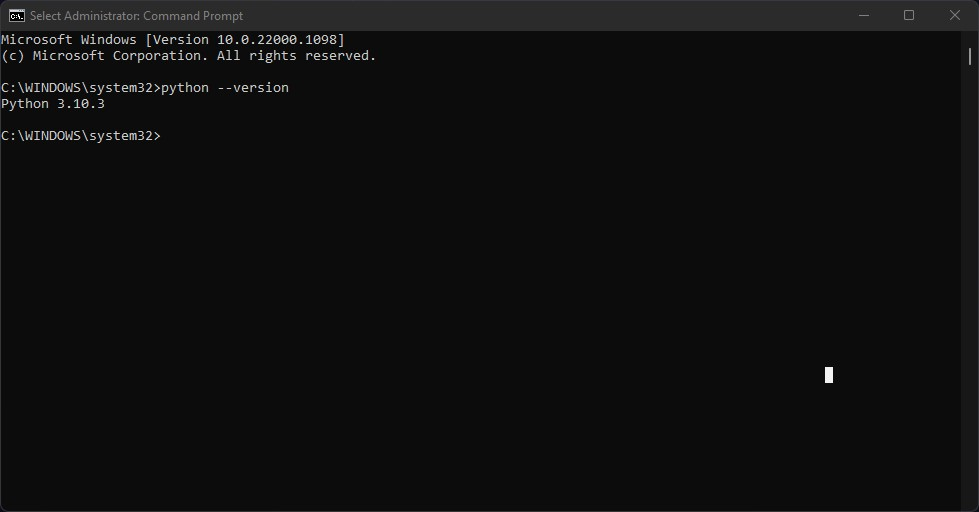
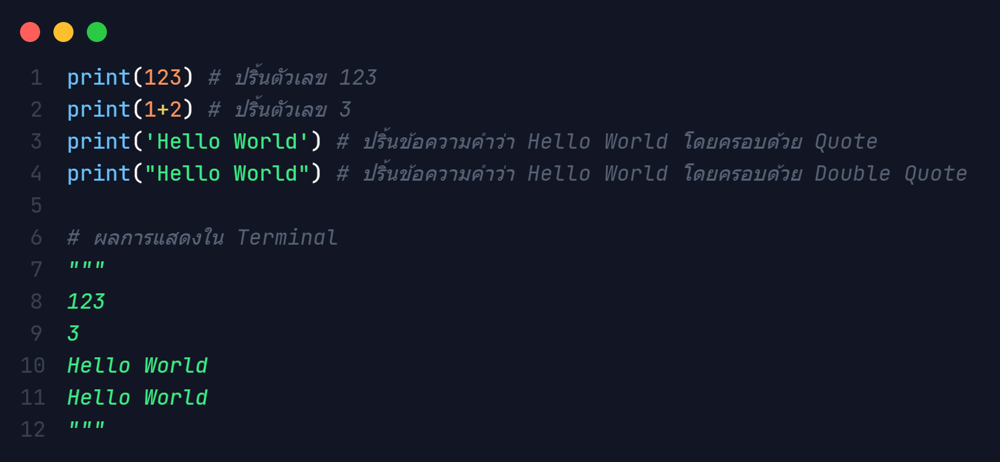

เริ่มต้นการเขียน Python
ติดตั้ง Python
- ไปที่ python.org คลิก download 
- ติดตั้งโปรแกรม *ติ๊กถูกที่ Add Python to PATH ด้วย 
- ทำการติดตั้งให้เรียบร้อย และรอจนโหลดเสร็จ *อาจต้อง restart computer
*optional ติดตั้ง Visual Studio Code ( Text Editor Software)
ไปที่ code.visualstuido.com download และทำการติดตั้ง
แนะนำให้ติดตั้ง plugin ถาษา Python ใน Visual Stuido Code ด้วย
ทดสอบ Python
กดปุ่ม window เสิร์ชหา Command Prompt เปิดและพิมพ์คำสั่ง python --version
หาก Python ได้ถูกติดตั้งสำเร็จและได้ทำงาน Add PATH จะมี version ของ Python ปรากฏออกมา
นามสกุลไฟล์ Python
ในการเขียนโปรแกรมภาษา Python ไฟล์โค้ดจะมีนามสถุลคือ .py

ฟังก์ชั่นคำสั่งเบื้องต้นของ Python
print() คือฟังก์ชั่นที่ใช้แสดงผลข้อมูลออกมาทาง terminal โดยที่ภายในวงเล็บ () จะเป็นข้อมูลที่ต้องการให้ปริ้นออกมา
ข้อมุลนั้นอาจจะเป็น ตัวแปร ตัวเลข หรือข้อความก็ได้ หากเป็นตัวเลขสามารถพิมพ์ตัวเลขลงไปได้เลย
แต่หากเป็นข้อความจะต้องอยู่ในเครื่องหมาย Quote (') หรือ Double Quote (")
